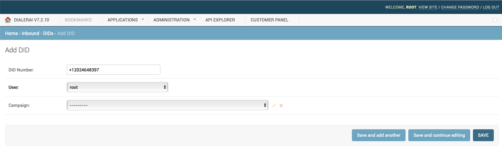

Inbound Calling¶
Overview¶
Inbound DID (telephone numbers) can be pointed to the Dialer, and calls passed directly to agents, forwarded to other destinations or passed into a IVR.
A phonebook containing data about the contact can be attached to an inbound campaign which will appear on screen when the call is passed an agent.
Inbound DID can be used for standard inbound calls transferred to an agent as well as voting lines and desimination of information.
DID Configuration¶
DID need to be initially configured by the Dialer Adminstrator, added and pointed to the tenant at http://HOSTNAME_IP/admin/inbound/did/
Once the DID has been directed to the tenant, then it can be configured by them in the Inbound Menu.
Inbound Campaign¶
A DID is directed to an inbound campaign configured in the Tenant’s user interface.

Calls can be sent to
- A Survey / IVR which has already been configured in the survey section
- Play Audio file and hang-up
- A Call-Center queue to be answered by an agent answered by the system.
- Direct Transfer to SIP URI or PSTN number via the selected gateway
- Play text to speech and hang up.
Schedule¶
A schedule can be set when inbound calls are allowed. Out of hours, they can be sent to an unavailable recording.
Extra¶
Under the extra tab, you can select a phonebook, as a call comes in, the callerID will be looked up against the phonebook. If the number is recognised, we can display data about the contact, as well as open a web based CRM at the contact’s record at the right record.
The call center config can be selected so the agent has a script to read. Other features include call recording.